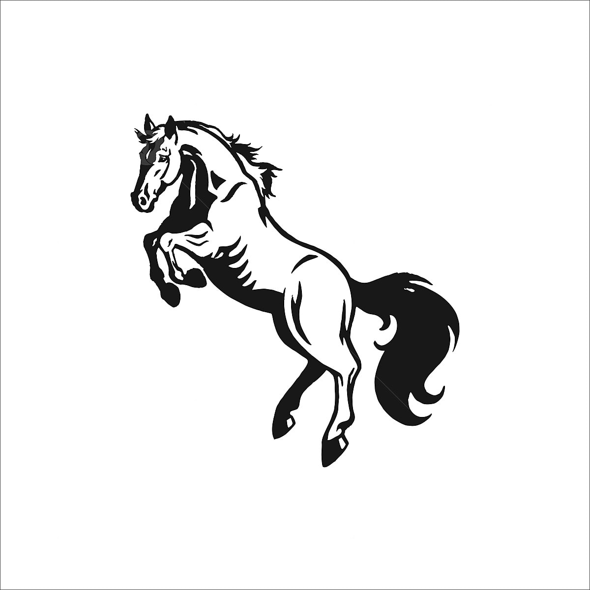

¿Búsqueda de Razas de Caballos?

Que raza de caballo buscas
Seleccione una raza:
Seleccione una opción
Caballo Fusaichi Pegasus
Caballo Shareef Dancer
Caballo Totilas
Caballo Green Monkey
Caballo Palloubet Dhalong
Mostrar contenido